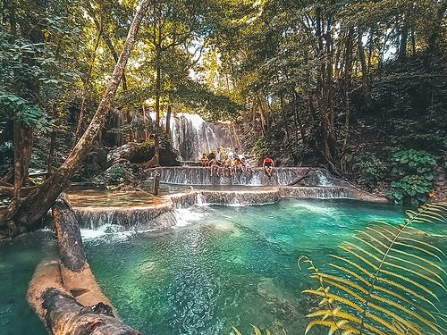
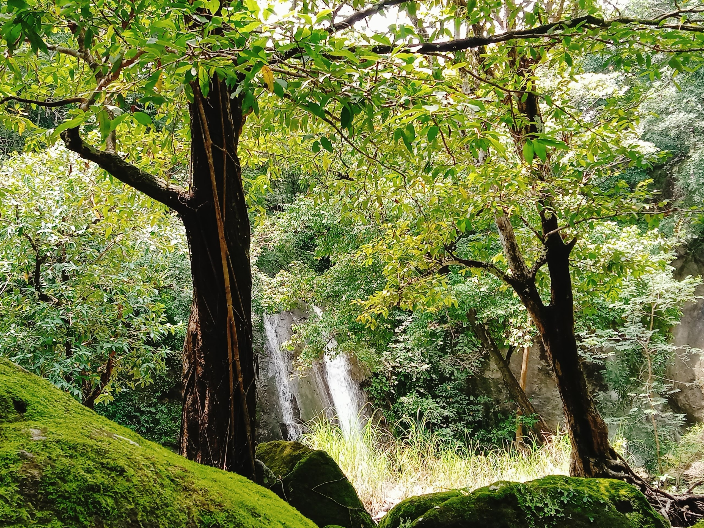
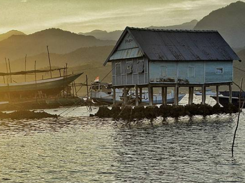

Beraneka ragam keindahan yang dimiliki oleh pulau Sumbawa, buat teman-teman yang mau liburan yuk explore disini
Kenawa Island
Sebuah pulau yang memiliki keindahan dan keunikan untuk memanjakan mata para wisatawan

Air Terjun Mata Jitu
Panorama begitu asri, lengkap dengan deretan pepohonan rimba. Sehingga wisata air terjun Sumbawa ini lantas menjadi destinasi tamasya unggulan di pulau Moyo.
Pulau Paserang
Dari atas bukit Pulau Paserang, 360 derajat pandangan terlihat begitu indah. Di spot ini kamu bisa melihat Sumbawa keseluruhan.

Palman Waterfall
Air terjun yang masih alami dan airnya yang sangat sejuk sehingga membuat air terjun yang berada di tengah gunung Jaran Pusang ini begitu istimewa.
Tepal Village
Anda akan dibuai oleh desa terpencil yang unik yang dihuni oleh Masyarakat dengan pola kehidupan tradisional yang mengandalkan hasil alam dan perkebunan kopi.
Liang Bukal
Tempat ini sangat cocok untuk menjelajahi alam bawah tanah. Terletak sekitar dua kilometer dari jalan utama desa sehingga dibutuhkan tenaga yang cukup saat berwisata ke liang Bukal.
Teluk Saleh
Pemandangan alam di Teluk Saleh begitu cantik. Kita bisa menjelajahi teluk menggunakan perahu. Snorkeling, diving melihat keindahan berbagai biota laut di dalamnya.

Bungin Island
pulau ini tidak memiliki garis pantai dan juga lahan hijau. Akan tetapi tidak adanya lagi lahan hijau di sana menjadikan hewan ternak dapat hidup di Pulau Bungin.
Museum Asi Mbojo
Istana Bima adalah bangunan eksotik bergaya Eropa. Istana ini mulai dibangun tahun 1927. Perancangnya adalah arsitek kelahiran Kota Ambon bernama, Rahatta.